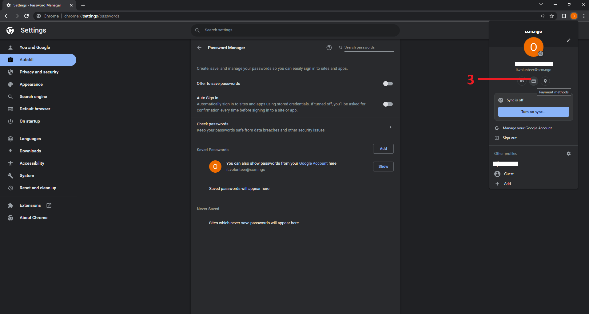
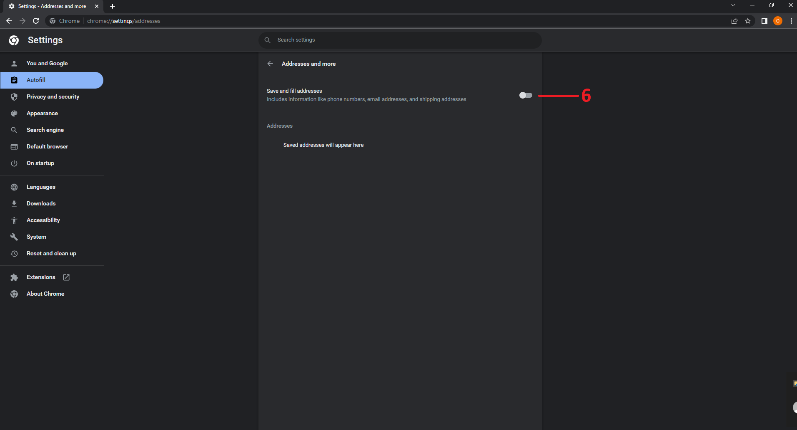
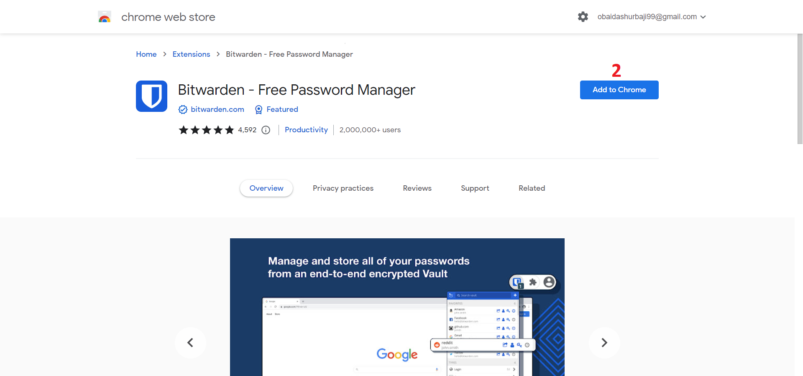
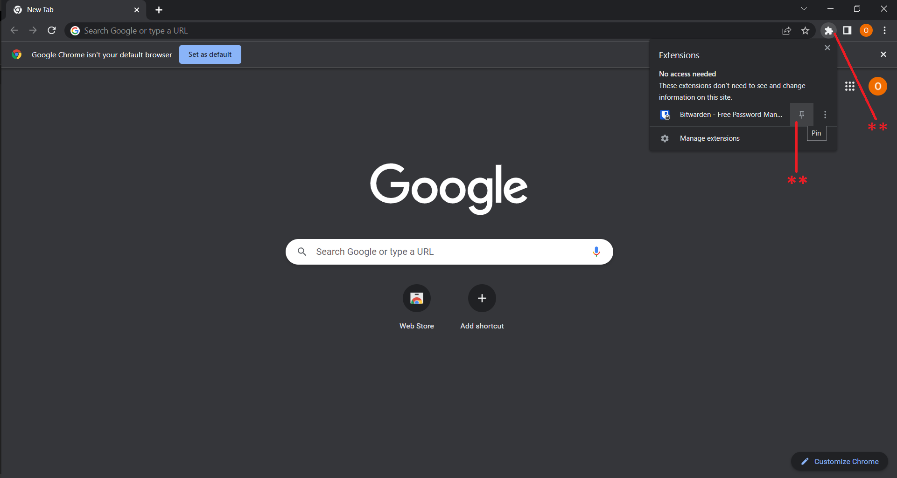
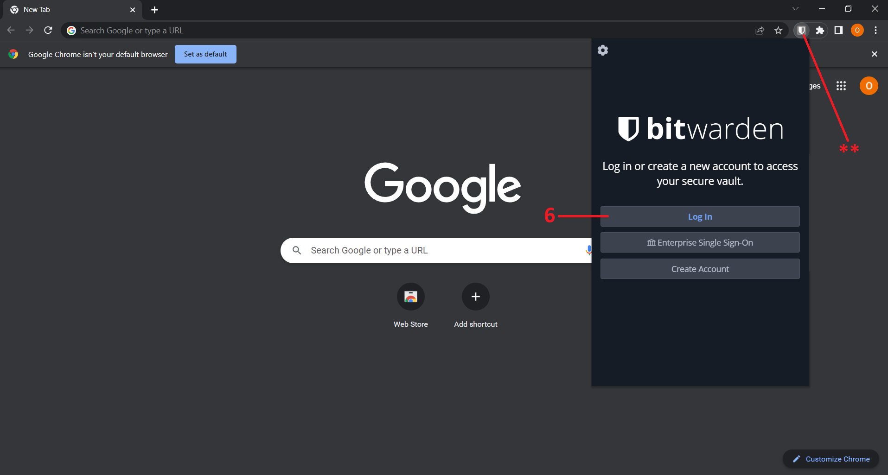

Jitsi || جيتسي
الاسم: جيتسي
المهمة: هو منصة آمنة ﻹجراء الإتصالات أو الإجتماعات
أنظمة التشغيل التي يعمل عليها: ويندوز، أندرويد، آيفون "IOS"
الثمن: مجاني
كيف يعمل؟
يؤمن جيتسي حماية البيانات حيث تكون البيانات المرسلة بين الطرفين مشفرة من قبل جيتسي
يمتاز برنامج جيتسي بالتالي:
- إنشاء قناة مشفرة للاتصال
- المجهولية: حيث لا يوجد حاجة لإنشاء حساب أو إدخال أية معلومات شخصية لإجراء محادثة
- يمكن إجراء المحادثة أو الإجتماع عبر متصفح الإنترنت بدون الحاجة لتنصيب التطبيق على الجهاز "يمكن تنصيب تطبيق "جيتسي" على اجهزة الكمبيوتر أو هواتف آندرويد و IOS"
يحتوى هذا الدليل على طريقة استخدام تطبيق جيتسي عن طريق المتصفح
-
الوصول إلى الموقع:
-
عن طريق الرابط هنا
تظهر الصفحة التالية، نضغط على:- نقوم بإدخال الاسم الخاص بالمكالمة أو الاجتماع الذي نريده، يمكن أن يكون أي اسم
- نضغط على بدأ الاتصال "Start Meeting"

-
عن طريق الرابط هنا
- تظهر النافذة التالية في أعلى شمال الصفحة، نضغط على "Allow" وتعني السماح للموقع بالوصول
إلى الكاميرا
والمايكروفون لاتمام المكالمة

-
تظهر الصفحة التالية:
- نقوم بادخال الاسم الذي نريد الظهور به في المكالمة أو الاجتماع
- نتأكد أن المايكروفون والكاميرا في حالة الإغلاق كما في الصورة
- نضغط على "Join Meeting" للانضمام إلى المكالمة

-
تظهر الصفحة التالية، وهي الواجهة الخاصة بالمكالمات في برنامج جيتسي

- نشرح في النقاط التالية أهم العناصر في هذه الواجهة
- في حال أردنا أن نغير الاسم الذي نظهر به
- للتحكم بالمايكروفون، فتحه أو إغلاقه
- للتحكم بالكاميرا، فتحها أو إغلاقها
- لمشاركة الشاشة الخاصة بنا بحيث يراها كل من في هذه المكالمة أو الاجتماع
- لفتح قائمة المحادثة "شات" مع الأعضاء المتواجدين في المكالمة
- لرفع اليد أو طلب الإذن للتحدث
- لرؤية الأعضاء المتواجدين في المكالمة
- لإظهار الأعضاء المتواجدين في المكالمة
-
عند الضغط على الثلاث نقاط تظهر القائمة التالية:

- "Invite People" لدعوة أشخاص جدد للمكالمة، عن طريق نسخ الليلنك كما في الصورة ثم إرساله لمن
نريد
- "Invite People" لدعوة أشخاص جدد للمكالمة، عن طريق نسخ الليلنك كما في الصورة ثم إرساله لمن
نريد
- "Invite People" لدعوة أشخاص جدد للمكالمة، عن طريق نسخ الليلنك كما في الصورة ثم إرساله لمن
نريد
- "Invite People" لدعوة أشخاص جدد للمكالمة، عن طريق نسخ الليلنك كما في الصورة ثم إرساله لمن
نريد
- "Invite People" لدعوة أشخاص جدد للمكالمة، عن طريق نسخ الليلنك كما في الصورة ثم إرساله لمن
نريد
- "Invite People" لدعوة أشخاص جدد للمكالمة، عن طريق نسخ الليلنك كما في الصورة ثم إرساله لمن
نريد
- "Invite People" لدعوة أشخاص جدد للمكالمة، عن طريق نسخ الليلنك كما في الصورة ثم إرساله لمن
نريد
- "Invite People" لدعوة أشخاص جدد للمكالمة، عن طريق نسخ الليلنك كما في الصورة ثم إرساله لمن
نريد
- "Invite People" لدعوة أشخاص جدد للمكالمة، عن طريق نسخ الليلنك كما في الصورة ثم إرساله لمن
نريد
2- إلغاء حفظ المتصفح للبيانات الشخصية
-
بعد إنشاء الحساب كما هو موضح في الخطوات السابقة، نفتح متصفح جوجل كروم
-
في أعلى يمين الشاشة، نضغط على صورة الحرف بجانب النقاط الثلاثة، تحت علامة X
يمكن أن يكون الحرف مختلف، لا مشكلة في ذلك-
عند الضغط على صورة الحرف تظهر القائمة التالية أسفل الصورة مباشرةَ
- نضغط على صورة المفتاح الصغيرة الموضحة كما في الصورة

-
نتأكد من إلغاء أو إغلاق الخيارين المشار إليهما بحيث يكونان كما في الصورة
بإلغاء هذين الخيارين لن يقدم لك المتصفح خيار حفظ بيانات تسجيل الدخول مرة أخرى، كما أنه لن يملأ حقول بيانات تسجيل الدخول بشكل تلقائي مرة أخرى
- في نفس الصفحة، نضغط على صورة الحرف الصغيرة في أعلى يمين الشاشة كما في الخطوة الأولى، ثم نضغط على الدائرة في المنتصف كما هو موضح، وتعني الدخول إلى إعدادات بطاقات الدفع الالكتروني 
-
نتأكد من إلغاء أو إغلاق الخيارين المشار إليهما بحيث يكونان كما في الصورة التالية
بإلغاء هذين الخيارين لن يقوم المتصفح بحفظ بيانات البطاقات البنكية والدفع الالكتروني، كما لن يقوم بملئ هذه الحقول بشكل تلقائي مرة أخرى
-
في نفس الصفحة، نضغط على صورة الحرف الصغيرة في أعلى يمين الشاشة كما في الخطوة الأولى، ثم نضغط على
الدائرة الأخير كما في الصورة التالية وتعني الدخول إلى إعدادات الموقع والعناوين الشخصية

-
تظهر الصفحة التالية، نتأكد من إلغاء أو إغلاق الخيار المشار إليه بحيث يكون كما في الصورة
بإلغاء هذا الخيار لن يقوم المتصفح بحفظ عنوانك أو موقعك الحالي ولن يقوم بملئ هذه البيانات في الحقول التي تطلبها مرة أخرى

3- إضافة بت فاردن إلى المتصفح وطريقة الاستخدام
-
الوصول إلى الموقع:
-
عن طريق الرابط هنا
ننزل في الصفحة إلى الأسفل قليلاَ حتى نجد قسم إضافات المتصفح "Web Browser"
نضغط على متصفح جوجل كروم "Google Chrome"
-
عن طريق الرابط هنا
-
تظهر الصفحة التالية:
نضغط على الخيار" Add to Chrome" ليبدأ تحميل الإضافة
 -
بعد انتهاء تحميل الإضافة، تظهر النافذة التالية: نضغط على الخيار "Add extension"
-
تظهر الصفحة التالية: وهي عبارة عن ترحيب من بت فاردن،
يمكنك إغلاقها

-
في أعلى يمين الشاشة نضغط على الشكل الصغير كما هو موضح في الصورة، ثم نضغط على صورة الدبوس الصغير بجانب
"Bitwarden" وذلك لتثبيت إضافة بت فاردن في شريط الأدوات
 -
عند ظهور علامة بت فاردن "علامة الدرع" نضغط عليها لتظهر النافذة التالية: نضغط على
"Login"
 -
تظهر نافذة تسجيل الدخول إلى حساب بت فاردن، ندخل الايميل وكلمة السر الرئيسية التي تم إنشاؤها سابقاَ

بعد إدخال بيانات تسجيل الدخول، نضغط زر "Enter" أو نضغط على "Login" كما هو موضح في الصورة السابقة -
تظهر النافذة التالية، وتعني أنه تم تسجيل الدخول إلى حساب بت فاردن بنجاح
لإضافة بيانات تسجيل دخول لموقع ما، نضغط على إشارة الزائد "+" كما في الصورة
-
تظهر النافذة التالية، نقوم بإدخال الحقول الخاصة ببيانات تسجيل الدخول كالتالي:
- اسم الموقع الخاص بهذه البيانات، مثلا: فيسبوك، نكتب رابط الموقع: facebook.com
- اسم المستخدم أو الايميل الالكتروني، يعتمد ذلك على الموقع المراد تسجيل البيانات عليه، في حالة فيسبوك نقوم بإدخال الايميل الالكتروني
- كلمة سر حسابنا على فيسبوك
- رابط الموقع كاملاَ، نجده في شريط البحث في أعلى الصفحة كما هو موضح في الصورة: في حالة فيسبوك مثلا: https://www.facebook.com
- نضغط حفظ "Save" في أعلى يمين النافذة
-
يمكن تكرار الخطوات السابقة لتسجيل وحفظ بيانات أي موقع مختلف، واستخدامها لاحقا عن طريق بت
فاردن
- بعد الانتهاء من الخطوات السابقة، نذهب إلى الموقع الذي نريد تسجيل الدخول إليه، في هذا المثال: موقع فيسبوك، نلاحظ ظهور رقم واحد "1" بجانب علامة الدرع الخاصة بإضافة بت فاردن كما هو موضح في الصورة التالية
-
نقوم بالضغط على علامة الدرع، تظهر نافذة بت فاردن، نضغط على بيانات تسجيل الدخول الخاصة بموقع فيسبوك
-
نلاحظ بعد تنفيذ الخطوة السابقة أن البيانات تم ملؤها بشكل تلقائي